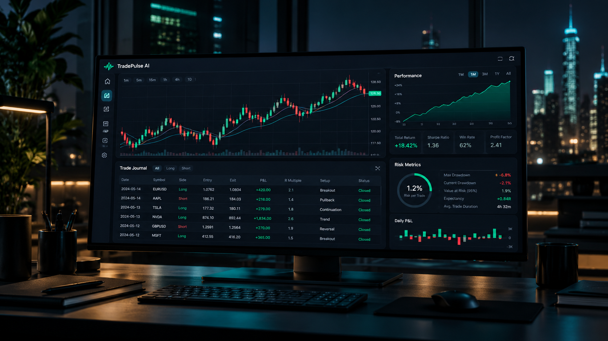

Trade Journal Engine
Log entries, exits, size, setup, emotion, mistake, chart notes, and execution quality through a clean modal workflow.

A premium trading journal for disciplined traders who want clean execution records, Python-backed performance analytics, risk controls, and market context in one focused workspace.
TradePulse keeps the existing dark fintech terminal feel while giving each workflow a clear job: log, analyze, review, size risk, and improve.
Log entries, exits, size, setup, emotion, mistake, chart notes, and execution quality through a clean modal workflow.
When connected, the Python API validates costs and calculates P&L, return, risk, and R-multiple. Offline mode uses local calculations with disclosed limitations.
A month-by-month heatmap exposes daily performance clusters, loss streaks, and consistency patterns at a glance.
Position sizing and daily drawdown guardrails help traders define loss before entry and protect capital after mistakes.
Record the symbol, side, entry, exit, quantity, strategy, emotion, mistake, rating, and optional chart reference.
With a configured backend, FastAPI validates and persists records and Python computes the metrics. Otherwise, records stay in this browser.
Use the calendar, equity curve, strategy breakdowns, mistake analytics, and market charts to refine the next trade.
This static frontend runs independently. A separately hosted Python API enables validated accounting and database persistence. Without it, the workspace shows clearly labeled local-cache or fictional demo data.
| Capability | TradePulse AI | Manual Journal |
|---|---|---|
| Trade calculations | Python calculations when connected; disclosed local fallback offline | Manual formulas that drift over time |
| Behavior review | Emotion and mistake analytics by realized P&L | Hard to spot patterns without cleanup |
| Risk discipline | Position sizing and daily risk guard in the workspace | Separate calculator or mental math |
| Trade context | Candlestick detail with entry, exit, stop, and target markers | Disconnected screenshots and notes |
"Which setups followed my plan, and which trades were driven by emotion?"
Execution review prompt"What is my planned risk, and what can I learn from the last trading session?"
Risk review promptLaunch the dashboard to log trades, inspect the P&L calendar, review strategy analytics, and size risk before entry.
Launch Trading Workspace